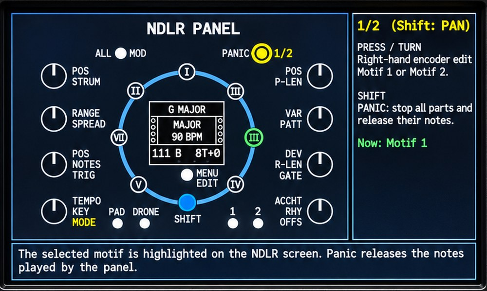

Your whole NDLR on screen
All eight encoders, the seven chord buttons, ALL, 1/2, Menu, Shift and the four part buttons sit where they do on the hardware, drawn across the Mini's 800 by 480 display.
Chord machine meets tracker
Eight encoders, a ring of seven chord buttons and four parts, drawn on the Mini's screen and played with its dpad. Chords, a drone and two motifs drive the internal synths, with the NDLR's menus and editors behind them.

Alpaca running on a Polyend Tracker Mini.
This is the screen Alpaca draws on the Mini. Roll the mouse over any control to see what it does, click to press it, click and drag a dial up or down to turn it, and use the buttons underneath as the Mini's dpad and keys. Switch Sound on to hear it: the Pad plays on Synth 1, the Drone on Synth 2 and both Motifs share Synth 3, as on the Tracker, and each synth has its own preset menu. and the encoders, tempo, key and mode change what you hear.
The panel is drawn for an 800 by 480 screen, so it reads best on a tablet or computer.
With a mouse, drag a dial up or down to turn it. Keyboard, once the panel has focus: ←↑↓→ dpad, Enter Middle, -= turn by 1, [] turn by 10, M Menu, P Play, hold Shift for NDLR Shift. On a touch screen, tap once to highlight and again to press. Hold Shift and press the turn keys to change the master volume, as on the Mini. The sound here is a simple browser synth that shows the idea. On the Tracker, Alpaca plays the bundled synths (ACD, FAT, UAP, WTFM, PERC, DIRT and CHIP), so it sounds much better.
An NDLR is a box you play with chords and encoders. Alpaca keeps that layout and puts all of it on hardware you may already own.
All eight encoders, the seven chord buttons, ALL, 1/2, Menu, Shift and the four part buttons sit where they do on the hardware, drawn across the Mini's 800 by 480 display.
Move a highlight from control to control with the dpad. Middle presses what is highlighted, and the plus and minus buttons turn the highlighted encoder by 1 or by 10.
Chord buttons I to VII, with Shift chord types: triad, 7th, sus2, alt2, alt1, sus4 and 6th. Fifteen modes, keys stepped around the circle of fifths, and tempo from 10 to 300 BPM.
Pad, Drone and both motifs play the Mini's internal synths over virtual MIDI channels 1 to 3. Load WTFM, ACD or VAP on a part and Alpaca drives it.
Pad position, strum, range up to 22 notes and six spread voicings. Drone position, notes and trigger, with root and chord modes.
Position and pattern length, six variations, forty patterns and forty rhythms, clock divisions, rhythm length of 4 to 32 beats, accent and offset. The 1/2 button picks which motif you edit.
Menu mode opens the four Mod Matrix pages, LFO Config and the three Settings pages from the encoder buttons, as on the hardware.
Editor mode opens the Chord Sequencer, MIDI Controller, Pattern Editor, Rhythm Editor and Perlin noise generator.
Alpaca has no sounds of its own. It plays the synths already built into your Tracker (ACD, FAT, UAP, WTFM, PERC, DIRT and CHIP), so the pad, drone and motifs sound as good as the Mini itself does.
The Drone holds its notes for as long as it plays, so give Synth 2 a preset that sustains. A sound that decays on its own will fade away while the Drone is still running, and it will seem to have stopped.
Swap synth presets on the fly. The chords, drone and motifs keep playing while you audition new sounds.
Open the Sample Record window while Alpaca is playing, so you can capture a sound without stopping the music.
Sample playback now has a loop setting, so you no longer have to hold the key or keep pressing Preview to hear a sample.
A side column explains whatever is highlighted: what it does alone, with Shift, and in Menu or Editor mode, with a live readout of its value.
Alpaca follows the NDLR's front plate: the same encoders either side, the same ring of chord buttons around a small screen, the same four part buttons along the bottom. The Mini supplies the screen, the dpad and the synths.

A chord and arpeggio machine from Conductive Labs: eight push encoders, seven chord buttons and a small display.
Polyend's compact tracker: a colour screen, a dpad, soft keys and internal synths.

The NDLR's controls on the Mini's screen. The green button is the current chord and the yellow ring follows the dpad.
The first two images show the original hardware and belong to Conductive Labs and Polyend. The third shows Alpaca running on the Mini.
Two small companies, each with an unusual instrument and a habit of listening to its users.
Conductive Labs, Beaverton, Oregon
Pronounced "noodler". Conductive Labs is run by two co-founders who describe it as a passion project: they build what they want to use in their own studios. The NDLR packs a four-part polyphonic arpeggiator and chord player into one box, made to give otherwise silent synthesizers something to play.
It reached the world on Kickstarter in September 2017 with a $40,000 goal. Backers could get one for $199, with delivery promised for late March 2018. Early demos paired prototypes with a Blofeld, Volcas and a Deepmind 12.
The first version came in a blue and grey anodized aluminium case. Backers later asked for more, so the company redesigned the hardware and moved the software to a PJRC Teensy 4. The Rev2 has a red powder-coated base and a power button, and original owners could buy an upgrade board. In 2025 the company turned to a new synth, the Terrain Synth, with its own Kickstarter.
Polyend, Olsztyn, Poland
Trackers began as software on home computers: the Amiga, Atari ST, MS-DOS machines and the C64. Music is typed into a grid of notes and samples, row by row, instead of being drawn on a timeline. Polyend, founded in 2015 in north-eastern Poland by Piotr Raczyński, took that idea back into a box with buttons.
The company first made drum robots and sequencers before releasing the Tracker hardware in 2020. The compact Tracker Mini was announced for pre-order in 2023 at $699, with first deliveries expected in July of that year. A limited all-metal edition followed for the company's tenth anniversary in 2025.
On November 2, 2026 Polyend published the firmware source for the Tracker, Tracker+ and Tracker Mini on GitHub as Tracker Community Edition 1.0. It added a recovery system against bad builds, the CHIP and DIRT synths on the Tracker+ and Mini, and a synth SDK. Alpaca is built on that release.
Open Config, then Info, then NDLR Panel. Everything is driven by the Mini's own buttons.
| Dpad | Move the highlight |
|---|---|
| Middle | Press the highlighted control |
| +1 / -1 | Turn the highlighted encoder one step |
| +10 / -10 | Turn it ten steps |
| Play | ALL: start or stop every part |
| Shift | Hold for NDLR Shift, or highlight SHIFT and press Middle to latch it |
| Menu (hold) | Mini module popup, to leave the panel |
Most people only need the first path: download one file and copy it to the SD card. No coding or compiler needed.
.ptf file from the Releases page (the button above).Firmware. Create the folder if it isn't there.For people who want to change the code. You need the Tracker CE source and the ARM toolchain it asks for.
tracker-ce source from Polyend's GitHub.firmware folder from the Alpaca repo over the root of that checkout.make mini TOOLCHAIN=arm-none-eabi- BUILD_TAG=alpaca.ptf to /Firmware on the SD card and run Firmware update, as in "Just install it".If Firmware update doesn't list the file, check that it sits directly inside Firmware on the card and still ends in .ptf. Alpaca is a complete firmware, so installing it replaces what is on the Mini now. Tracker CE's recovery system and Polyend's own firmware are the way back if you want to switch.
Alpaca is free. If it makes your music better, you can leave a tip on Ko-fi.
Fan-made and unofficial, and flashing firmware is at your own risk. It uses the same licence as Tracker CE, PolyForm Noncommercial, so it is free to use but not to sell.